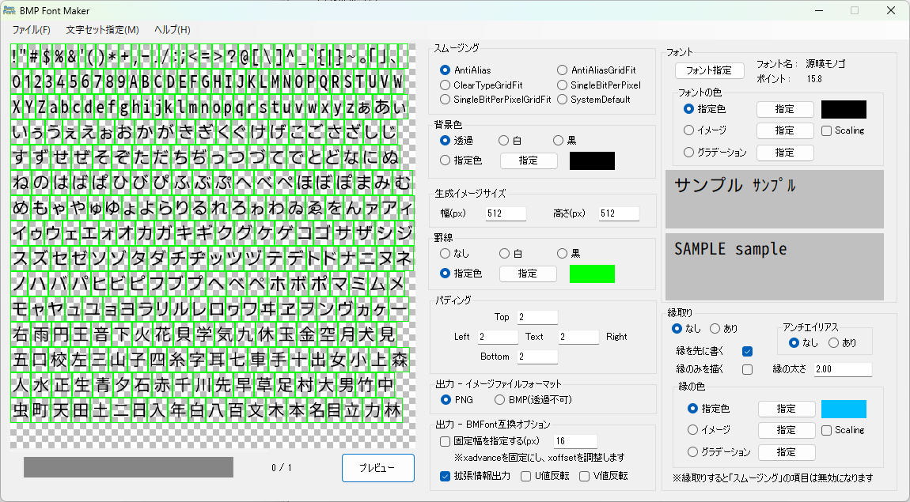
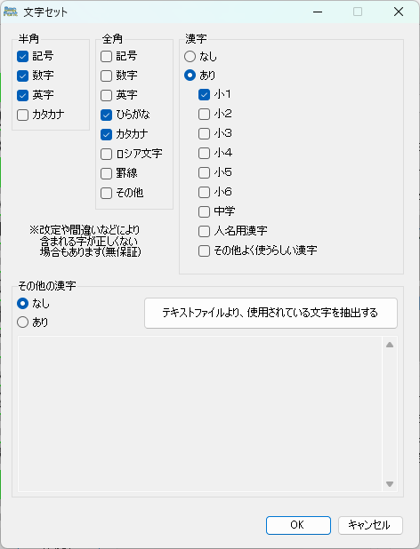
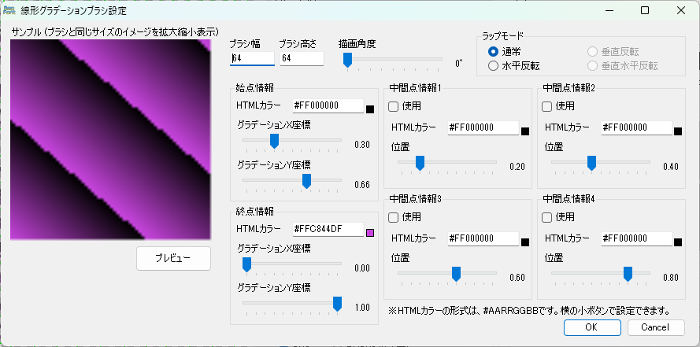
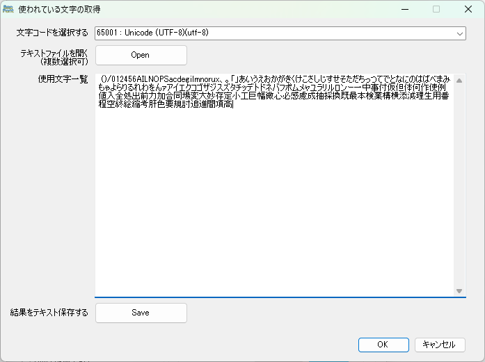

KabooBMPFontMakerは、指定されたフォントを使用してビットマップフォント画像を作成するためのツールです。
このツールを使用することで、ゲーム開発やグラフィック用途に適したフォントテクスチャを簡単に生成することができます。
アプリケーションのメイン画面です。フォントの生成設定やプレビュー、保存の操作を行います。

主な機能:
ビットマップフォントに含める文字（グリフ）を設定する画面です。
必要な文字を入力エリアに入力または貼り付けることで、それらの文字がフォント画像に含まれるようになります。

文字の描画に使用するブラシ（グラデーション）を設定する画面です。
単色だけでなく、リニアグラデーションを使用して文字を装飾することができます。

ヒント: 開始色と終了色、グラデーションの角度などを調整して、独自のデザインを作成できます。
テキストファイルなどから、使用されている文字を重複なく抽出するための補助ツールです。
ゲームのスクリプトファイルなどを読み込ませることで、必要な文字だけを効率的にリストアップし、文字セット設定に利用することができます。

本ツールは、フォントテクスチャ画像（.png/.bmp）以外に、文字の座標情報などを記述したデータファイル（.xmlおよび.fnt）を出力します。
一般的なビットマップフォント形式に準拠したXML形式です。
<font>
<info />
<common lineHeight="..." base="..." scaleW="..." scaleH="..." pages="..." />
<pages>
<page id="0" file="filename_0.png" />
</pages>
<chars count="...">
<char id="..." x="..." y="..." width="..." height="..." xoffset="..." yoffset="..." xadvance="..." page="..." chnl="15" />
...
</chars>
</font>
| タグ | 属性 | 説明 |
|---|---|---|
| common | lineHeight | 行の高さ（ピクセル） |
| base | ベースラインの位置 | |
| scaleW, scaleH | テクスチャの幅と高さ | |
| pages | テクスチャの枚数 | |
| page | id | ページID |
| file | テクスチャファイル名 | |
| char | id | 文字コード（Unicode） |
| x, y | テクスチャ内の左上座標 | |
| width, height | 文字の幅と高さ | |
| xoffset, yoffset | 描画時のオフセット | |
| xadvance | 次の文字までの送り幅 |
注意: 「拡張情報有効」の場合、u1, v1, u2, v2（UV座標）および文字そのもの(c)などの属性が追加されます。
XMLファイルの内容を、タグを使用しない簡潔なテキスト形式（BMFont Text Format準拠）で記述したものです。
内容はXML版とほぼ同一です。
info common lineHeight=... base=... scaleW=... scaleH=... pages=... page id=0 file="filename_0.png" chars count=... char id=... x=... y=... width=... height=... xoffset=... yoffset=... xadvance=... page=... chnl=15 ...
本ソフトウェアの使用によって生じた、いかなる損害についても、作者は一切の責任を負いません。
ご自身の責任においてご利用ください。
また、本ソフトウェアの仕様は予告なく変更される場合があります。